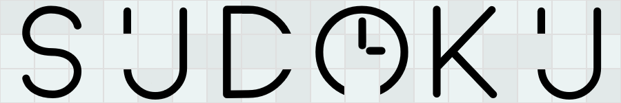

Comment jouer :
Choisissez votre difficulté
Cliquez sur "Nouvelle partie"
Cliquez sur un chiffre à placer (dans la liste de numéros sous le sudoku)
Cliquez sur une case du sudoku pour y placer le numéro sélectionné
Code Source
00:00
Difficulté :
Très facile (≈1 min)
Facile (≈10 min)
Moyen (≈15 min)
Difficile (>20 min)
Aide
Nouvelle partie
Tableau des scores
Indice
Abandonner